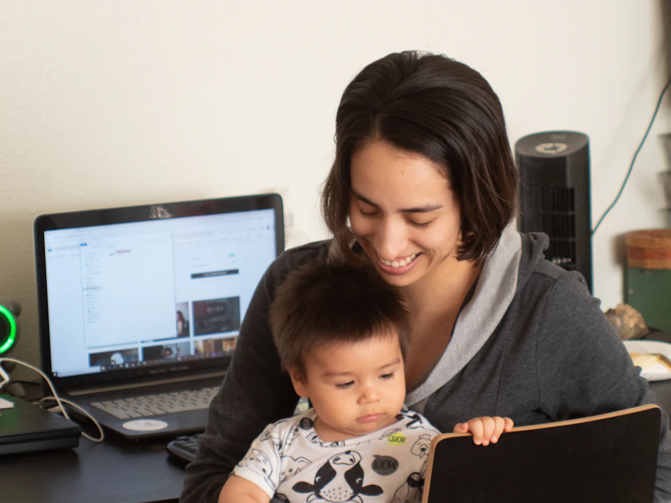

Schlafberatung für Kleinkinder von 1 bis 6 Jahren
Kleinkinder wollen mitreden, haben Ideen, Ängste und einen eigenen Kopf. Mit einem klaren Plan und viel Verständnis findet ihr wieder ruhigere Abende.
Kleinkinder von 1 bis 3 Jahren
In diesem Alter verändert sich viel: Laufen, Sprechen, Kita-Start, der Abschied vom Vormittagsschlaf. Häufige Anliegen sind:
- Einschlafen klappt nur mit Mama oder nur mit Papa
- Der Tagschlaf passt nicht mehr zum Alltag
- Kita-Start und neue Abläufe bringen den Schlaf durcheinander
- Häufiges Aufwachen und lange Wachphasen in der Nacht
Hilfreich ist oft ein schrittweiser Wechsel: Der andere Elternteil übernimmt zuerst Teile des Rituals, später ist er beim Einschlafen dabei und schließlich allein zuständig. Dass ein Kind die Veränderung erst einmal nicht gut findet und das zeigt, ist normal. Es darf dabei getröstet werden.
Kindergartenkinder von 3 bis 6 Jahren
Ältere Kinder können schon gut mitmachen, wenn sie verstehen, was sich ändert. Typische Themen sind:
- Abendroutinen, die jeden Abend länger werden
- Ängste beim Einschlafen
- Nächtliches Wandern ins Elternbett
- Unterschiedliche Bedürfnisse bei Geschwistern
Wir entwickeln einen Plan, den ihr wirklich umsetzen könnt, und der euer Kind ernst nimmt. Ohne Strafen, ohne Schreienlassen und ohne Schuldzuweisungen.

Beide Eltern an einem Tisch
Gerade wenn sich das Einschlafen künftig besser aufteilen soll, ist es hilfreich, wenn beide Elternteile beim Gespräch dabei sind. Online geht das auch von zwei Orten aus.
So funktioniert die Online-BeratungHäufige Fragen zum Kleinkindschlaf
Alle FragenAb wann kann ein Kind selbstständig einschlafen?
Dafür gibt es kein festes Alter. Manche Kinder schlafen früh allein ein, andere brauchen lange Begleitung. Selbstständigeres Einschlafen kann ein Ziel sein, ist aber keine Pflicht und bei Neugeborenen kein sinnvolles Ziel.
Muss mein Kind alleine weinen?
Nein. Kontrolliertes Schreienlassen gehört nicht zu meiner Beratung. Wir entwickeln einen klaren Plan und begleiten Veränderungen. Wenn euer Kind Trost braucht, bleibt ihr ansprechbar. Nähe ist kein Fehler.
Müssen wir abstillen oder alles sofort verändern?
Nein. Stillen, Schnuller oder Einschlafbegleitung sind nicht automatisch ein Problem. Wir schauen ehrlich darauf, was euch belastet und was ihr verändern möchtet. Es gibt keine pauschale Pflicht zum Abstillen oder zum Wechsel des Schlafplatzes. Bei Säuglingen haben Ernährung und sichere Schlafbedingungen Vorrang.
Versprichst du, dass unser Kind danach durchschläft?
Nein. Ich verspreche euch eine persönliche Begleitung und nachvollziehbare Schritte, aber keinen bestimmten Erfolg in einer festen Zahl von Nächten. Schlaf entwickelt sich individuell. Wir vereinbaren realistische Ziele und prüfen gemeinsam, was euch hilft.
Funktioniert die Beratung auch, wenn wir nicht in der Nähe wohnen?
Ja. Die Gespräche finden per Zoom oder Telefon statt, deshalb ist es egal, wo in Deutschland ihr wohnt. In Würzburg und im Umkreis von etwa 10 bis 15 Kilometern sind zusätzlich persönliche Termine nach Absprache möglich, ohne zusätzliche Anfahrtskosten.
Kostenloses Kennenlernen vereinbaren
Erzählt mir, was eure Nächte gerade schwer macht. In 20 kostenlosen Minuten schauen wir gemeinsam, ob und wie ich euch begleiten kann, per Zoom oder Telefon, wo immer ihr in Deutschland wohnt.
- Telefon0173 2584141
- E-Mailbabyschlafberatung.annalena@gmail.com
- GesprächszeitenMo–Fr 17–19 Uhr, Sa 9–13 Uhr
- StandortEisingen bei Würzburg, online in ganz Deutschland